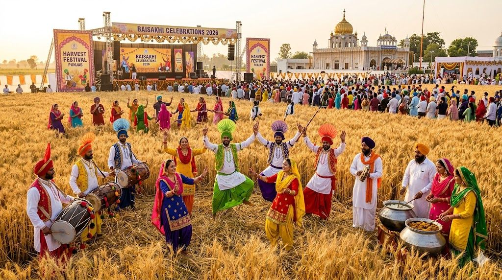
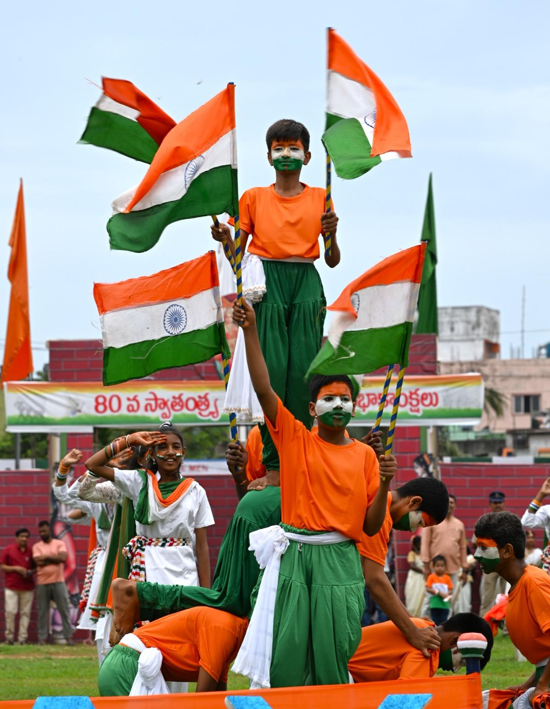
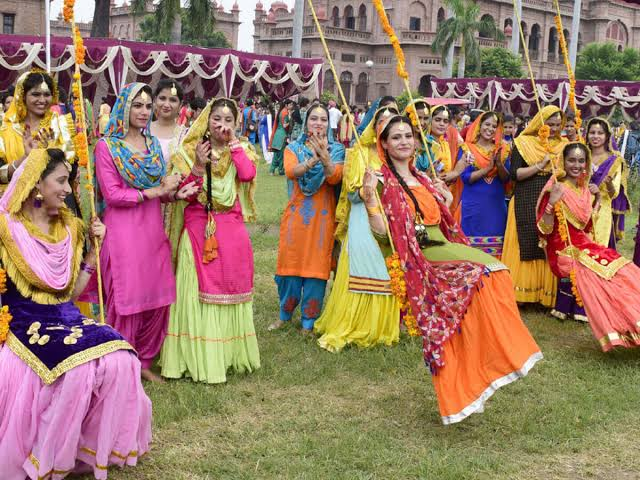
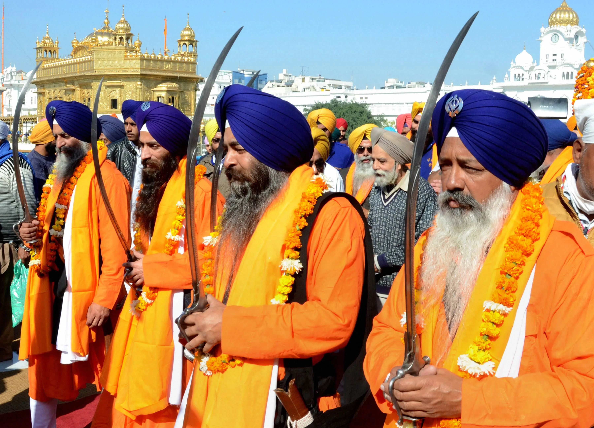
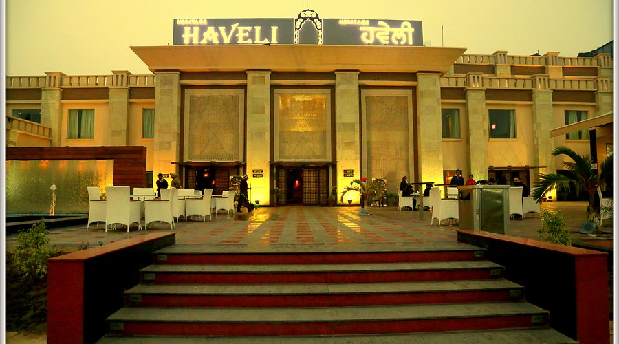

Lohri Celebration
Celebrate the traditional Punjabi festival of Lohri with bonfires, folk music, dance and delicious food.
📍 Ropar, Punjab

Baisakhi
Experience Punjabi culture, traditional music, vibrant celebrations and the spirit of harvest.
📍 Ropar, Punjab

Independence Day
Celebrate India's Independence Day with flag hoisting, patriotic programs and cultural events.
📍 Ropar, Punjab

Teej Festival
Enjoy Punjabi folk traditions, gidda, mehndi, traditional dresses and joyful cultural activities.
📍 Ropar, Punjab

Gurpurab Celebration
Experience devotional programs, kirtan, Nagar Kirtan and community celebrations.
📍 Ropar, Punjab

Ropar Heritage Festival
Discover the history, heritage, traditional arts, crafts and cultural identity of Ropar.
📍 Ropar, Punjab